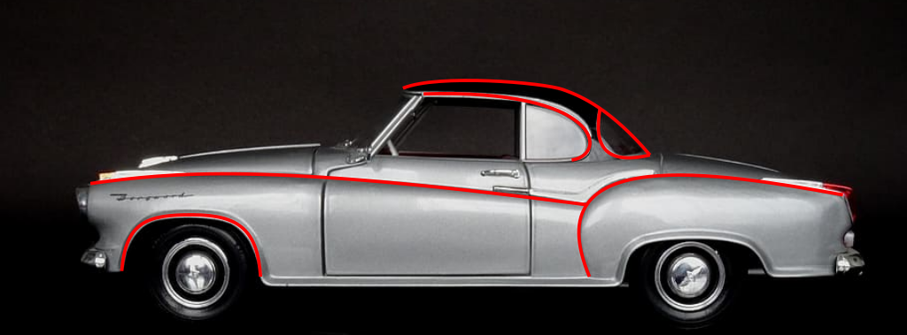

Inhalt
Spaß mit Bezier-Kuven
Einleitung
Kaum jemand von euch wird schon einmal etwas von Bezier-Kurven gehört haben. Unsere Welt ist aber voll davon. Sie werden beim Design von physischen Dingen wie Autos genauso eingesetzt wie bei Computerspielen. Im folgenden Bild siehst du ein Beispiel. Wenn man sich die Form des Autos ansieht, entdeckt man eine Menge Kurven. Diese Kurven sind Bezier-Kurven.

Im Bild sind bei weitem nicht alle Bezier-Kurven hervorgehoben. Findest du noch weitere?
Bezier-Kurven in Inkscape zeichnen
Inkscape
Am leichtesten versteht man Bezier-Kurven, wenn man mit ihnen experimentiert. Zu diesem Zweck installiere bitte das Open-Source Zeichenprogramm Inkscape. Dieses Zeichenprogramm ist sehr beliebt bei Menschen, die im Bereich Grafikdesign und Softwareentwicklung arbeiten.
Eine Linie in Inkscape zeichnen
-
Starte Inkscape und wähle das Pen/Bezier-Werkzeug aus. Klicke jetzt im Zeichenbereich an die Stelle, an der die Linie beginnen soll. Bewege die Maus zu der Stelle, wo die Linie enden soll.
Mach für unsere Übung eine möglichst waagrechte Linie. Klicke doppelt auf die Stelle des Linienende, um die Linie zu erstellen.

-
So sollte dein Ergebnis in etwa aussehen.

Aus der Linie eine Bezier-Kurve machen
Die Linie ist nett, aber was ist, wenn wir eigentlich einen Hügel zeichnen möchten? Hier kommt die Bezier-Kurve ins Spiel:
-
Schalte auf das Pfad verändern-Werkzeug um.

-
Klicke und Ziehe die Linie in der Mitte nach oben. Siehst du, wie aus der Linie eine Kurve wird? Das ist eine Bezier-Kurve!

-
Das Besondere an einer Bezier-Kurve sind ihre Kontrollpunkte. Markiere mit dem Pfad verändern-Werkzeug einen Endpunkt deiner Kurve, dann werden die Kontrollpunkte sichtbar. Verändere sie und beobachte, wie sich die Kurve verändert. Die Kontrollpunkte “ziehen” an der ursprünglichen Linie und verzerren sie so, dass das Ergebnis eine Kurve wird.
Unsere Bezier-Kurve besteht aus vier Punkten: Startpunkt, Endpunkt und zwei Kontrollpunkte. Man bezeichnet eine solche Bezier-Kurve als kubische Bezier-Kurve (in Englisch Cubic Bezier Curve).

Was Inkscape noch alles kann.
Inkscape kann noch viel mehr wenn es um Linien, Linienzüge und Kurven geht. In dieser Übung wollen wir aber jetzt zum Programmieren übergehen und daher Inkscape verlassen. Wer mehr über Zeichnen in Inkscape lernen möchte, dem empfehle ich, nach kostenlosen Anleitungen auf YouTube zu suchen. Wenn ihr zum Beispiel nach Inkscape Bezier Tool sucht, werdet ihr viele Videos mit nützlichen Tipps finden.
Was sind Bezier-Kurven?
Bezier-Kurven lassen sich mathematisch beschreiben und geometrisch veranschaulichen. Keine Angst, wir tauchen hier nicht tief in die Mathematik von Bezier-Kurven ein. Wer das möchte und schon gut Englisch spricht, dem empfehle ich das wunderschöne Video The Beauty of Bézier Curves.
Wenn ihr noch jünger seid und euch noch Grundlagen im Bereich Mathematik und Englisch fehlen, um das Video zu verstehen, dann könnt ihr euch einmal die Webseite https://www.geogebra.org/m/ek7RHvuc ansehen.
Verschiebt das in der Grafik markierte Dreieck. Seht ihr, wie sich die Bezier-Kurve durch die Bewegung von Kontrollpunkten verändert? Sieht spannend aus, nicht wahr?

Bezier-Kurven in HTML und SVG
In HTML und SVG ist Unterstützung für Bezier-Kurven eingebaut. Das möchten wir jetzt ausprobieren.
Öffne https://stackblitz.com/edit/svg-bezier-starter im Browser. Der HTML-Code ist unvollständig. Unten siehst du den fertigen Code und in der Grafik siehst du, wie das Endergebnis aussehen soll. Ergänze den Code entsprechend der Anleitung unten. Kopiere ihn nicht, sondern tippe ihn ein. So übst du tippen.
Achte im Code auf die <path ...>-Elemente. Dort findest du die Befehle H für horizontale Linie, Q für quadratische Bezier-Kurve und C für kubische Bezier-Kurve. Experimente mit den Koordinaten und versuche zu verstehen, wo die Start-, End- und Kontrollpunkte im Code zu finden sind.
<html>
<head>
<meta charset="UTF-8">
<link rel="stylesheet" type="text/css" href="styles.css">
</head>
<body>
<h1>Bezier Curves in HTML and SVG</h1>
<h2>Line</h2>
<p>
A line has two points.
</p>
<svg width="510" height="10">
<path d="M5 5 H505" />
<circle cx="5" cy="5" r="4" />
<circle cx="505" cy="5" r="4" />
</svg>
<h2>Quadratic Bezier</h2>
<p>
A quadratic Bezier curve has three points.
</p>
<svg width="510" height="210">
<path d="M5 205 Q 255 0, 505 205" />
<circle cx="5" cy="205" r="4" />
<circle cx="505" cy="205" r="4" />
<circle cx="255" cy="5" r="4" />
<line x1="5" y1="205" x2="255" y2="5" />
<line x1="505" y1="205" x2="255" y2="5" />
</svg>
<h2>Cubic Bezier</h2>
<p>
A cubic Bezier curve has four points.
</p>
<svg width="510" height="415">
<path d="M5 205 C 255 0, 255 410, 505 205" />
<circle cx="5" cy="205" r="4" />
<circle cx="505" cy="205" r="4" />
<circle cx="255" cy="5" r="4" />
<circle cx="255" cy="410" r="4" />
<line x1="5" y1="205" x2="255" y2="5" />
<line x1="505" y1="205" x2="255" y2="410" />
</svg>
</body>
</html>
Du kannst dir die fertige Lösung unter https://stackblitz.com/edit/svg-bezier ansehen.
Suchst du eine Herausforderung? Versuche ein Herz mit Bezier-Kurven mit SVG zu zeichnen.
Falls du schon etwas älter bist, Interesse an Mathematik hast und schon gut Englisch verstehst, schau dir die Webseite https://www.drububu.com/animation/beziercurves/index.html an. Dort wird erklärt, wie man Bezier-Kurven selbst berechnen und mit SVG zeichnen kann.
Bezier-Kuven in p5js
Quadratische Bezier-Kurve
Auch die Spieleplattform p5js beherrscht Bezier-Kurven. Das möchten wir in der folgenden Übung probieren.
Öffne https://stackblitz.com/edit/p5-quadratic-bezier-starter im Browser. Der TypeScript-Code ist unvollständig. Unten siehst du den fertigen Code und in der Grafik siehst du, wie das Endergebnis aussehen soll. Ergänze den Code entsprechend der Anleitung unten. Kopiere ihn nicht, sondern tippe ihn ein. So übst du tippen.
Achte auf die Kommentare im Code. Falls du die Übung ohne CoderDojo-Mentorin machst, folgende den Anleitungen in den Kommentaren. In einem Workshop mit Mentor-Unterstützung werden wir den Code genau durchsprechen.
Erkennst du, um welche Art von Bezier-Kurve es sich handelt? Es ist eine quadratische Bezier-Kurve, weil es drei Punkte gibt: Startpunkt, Endpunkt und Kontrollpunkt. Der Kontrollpunkt wird mit der Maus bewegt.
import './style.css';
import p5 = require('p5');
function setup(p: p5) {
p.createCanvas(510, 500);
}
function draw(p: p5) {
p.background('white');
p.noFill();
// Startpunkt
const startVec = p.createVector(5, 205);
// Endpunkt
const endVec = p.createVector(505, 205);
// Kontrollpunkt (wird durch Maus gesteuert)
const mouseVec = p.createVector(p.mouseX, p.mouseY);
p.colorMode(p.HSB, 1);
p.strokeWeight(1);
// Experimentiere mit diesem Wert+
// Probiere erst 0.5, dann 0.25, |
// dann 0.125, etc. Erkennst du, |
// was passiert? |
// V
for (let i = 0; i <= 1.001; i += 0.05) {
p.stroke(i, 255, 255);
// Teile den Vector vom Startpunkt zum Kontrollpunkt
let v1: p5.Vector = <any>p5.Vector.lerp(startVec, mouseVec, i);
p.circle(v1.x, v1.y, 3);
// Teile den Vector vom Kontrollpunkt zum Endpunkt
let v2: p5.Vector = <any>p5.Vector.lerp(mouseVec, endVec, i);
p.circle(v2.x, v2.y, 3);
// Verbinde die Ergebnisse der vorherigen Teilungen
p.line(v1.x, v1.y, v2.x, v2.y);
}
// Mit dem Code oben haben wir selbst eine quadratische Bezier-Kurve
// hergeleitet. p5js kann sie aber auch direkt zeichnen. Dafür verwenden
// wir folgenden Code:
p.stroke('fuchsia');
p.strokeWeight(5);
p.beginShape();
p.vertex(startVec.x, startVec.y);
p.quadraticVertex(mouseVec.x, mouseVec.y, endVec.x, endVec.y);
p.endShape();
}
const p = new p5((p: p5) => {
p.setup = () => setup(p);
p.draw = () => draw(p);
return p;
});

Du kannst dir die fertige Lösung unter https://stackblitz.com/edit/p5-quadratic-bezier ansehen.
Kubische Bezier-Kurven
Jetzt gehen wir den nächsten Schritt und probieren eine kubische Bezier-Kurve in p5js.
Öffne https://stackblitz.com/edit/p5-bezier-starter im Browser. Der TypeScript-Code ist unvollständig. Unten siehst du den fertigen Code und in der Grafik siehst du, wie das Endergebnis aussehen soll. Die Bezier-Kurve ändert sich je nach Mausposition. Ergänze den Code entsprechend der Anleitung unten. Kopiere ihn nicht, sondern tippe ihn ein. So übst du tippen.
import './style.css';
import p5 = require('p5');
function setup(p: p5) {
p.createCanvas(510, 500);
}
function draw(p: p5) {
p.background('white');
p.noFill();
// Bezier-Kurve zeichnen
p.stroke('red');
p.strokeWeight(5);
p.bezier(
// Startpunkt
5, 205,
// Kontrollpunkt 1
p.mouseX, 205 - Math.abs(p.mouseY - 205),
// Kontrollpunkt 2
p.mouseX, 205 + Math.abs(p.mouseY - 205),
// Endpunkt
505, 205);
// Kontrollpunkte anzeigen, um genauer zu verstehen,
// wie die Bezier-Kurve entsteht.
p.stroke('blue');
p.circle(5, 205, 4);
p.circle(505, 205, 4);
p.circle(p.mouseX, 205 - Math.abs(p.mouseY - 205), 4);
p.circle(p.mouseX, 205 + Math.abs(p.mouseY - 205), 4);
p.strokeWeight(1);
p.line(5, 205, p.mouseX, 205 - Math.abs(p.mouseY - 205))
p.line(505, 205, p.mouseX, 205 + Math.abs(p.mouseY - 205))
}
const p = new p5((p: p5) => {
p.setup = () => setup(p);
p.draw = () => draw(p);
return p;
});

Du kannst dir die fertige Lösung unter https://stackblitz.com/edit/p5-bezier ansehen.
Weitere Übungen für fortgeschrittene Coder
In der Praxis muss man grafische Objekte z.B. in Spielen oft verschieben und rotieren. Das geht auch mit Bezier-Kurven. Schau dir das Codebeispiel https://stackblitz.com/edit/p5-quadratic-bezier-move-rotate an und experimentiere damit. Fallen dir ähnliche Beispiele ein, mit denen du schöne Muster mit Bezier-Kurven zeichnen kannst?
Verstehst du Englisch schon recht gut und möchtest du mehr über Bezier-Kurven in p5js lernen? Ein super Video zu dem Thema findest du unter https://youtu.be/enNfb6p3j_g.